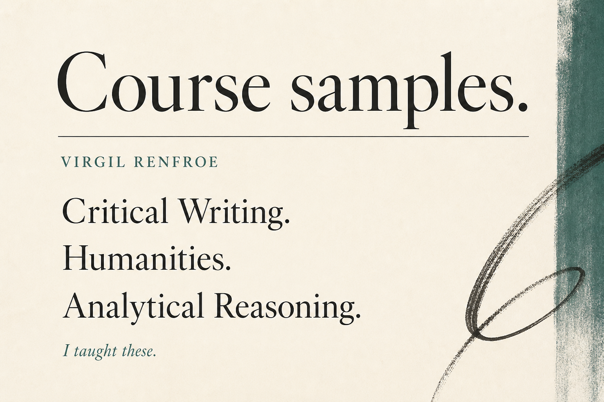

Course samples
I made these so someone hiring can click once. They run in the browser.
Three taught 101s, one AI PD sample, one faculty sit-down, six science structure samples I did not teach. Plus a TPS training-evidence sample, not a course I taught. Plus a week-one field new-hire sample, not a Stryker product. Plus a 12-minute first-week manager check-in, not an Insight Global product. Plus a 45-minute faculty/staff AI session, not a Duke product, not K–12.
Courses in the grain of what I taught
Lecturer, University Studies, NC A&T, 2004–2016. Director of Online Learning, 2008–2012.
Critical Writing 101
Write for someone who will close the tab if you are unconvincing. I co-created and taught Critical Writing.
Analytical Reasoning 101
A reason a classmate can actually break. Sized for the large first-year section I taught.
Humanities 101
One line you can point at. What it is doing — not a theme tour. I taught Humanities I & II.
Current educator / AI-literacy sample
Five-module async PD. Not a course I taught at A&T.
AI Literacy for Educators
Literacy, integrity, tools, then a plan for Monday. About two hours. Not a course I taught at A&T; I have not held a K–12 job.
Homework Quest
A browser game I made. Not a course I taught. Not a school product.
Homework Quest
Pick a hero. Walk the realms. Battle by answering well. Grown-ups: what can they read tonight. Not a grade. One sentence to try, or skip.
Faculty sit-down
A 10-minute Canvas page. Not a live course. Not an Instructure product.
Who sees what
When someone says they don’t want everyone to see something, we pick one of four tools. I designed the sit-down and directed Grok Build to build the page.
Training evidence (instructional design sample)
Not a course I taught. Not an American Express product. Not confidential policy.
What was live, who finished it, who signed
TPS evidence pack for Internal Audit vs OCC exam, public BSA/AML + OFAC, not an Amex product, not confidential policy.
Week-one field new-hire (instructional design sample)
Not a Stryker product. Not Stryker policy. Not taught at Stryker.
Week one until a trainer signs you off
Week-one new-hire lesson, two views, not a Stryker product.
First-week manager check-in (instructional design sample)
Not an Insight Global product. Not taught at Insight Global. Not a Figma file.
Twelve minutes. Three questions. A flag.
12-minute first-week manager check-in. Not Figma. Not an Insight Global product.
Faculty/staff AI session (instructional design sample)
Not a Duke product. Not taught at Duke. Not K–12.
Before you paste
45-minute faculty/staff session, Before you paste. Not a Duke product. Not K–12.
First-year science 101s — design samples
I did not teach these sciences as a content expert. They show I can structure a gen-ed 101. As Director of Online Learning I designed an online course called Scientific Development & Social Change — that is design and ops, not a physics, chemistry, or biology appointment. No invented labs or credentials.
Physics 101
Motion and force as thought, plus what you can watch at a kitchen table.
Biology 101
Cells, information, evolution — as accounts you can follow, not a lab protocol.
Chemistry 101
Atoms, bonding, and reading a label. No mixing how-tos.
Earth Science 101
Rocks, plates, water, and climate as a measured argument.
Astronomy 101
Night sky, orbits, light as data. Naked-eye and public images.
Statistics 101
Who got counted, and whether a link is a cause. Pairs with Analytical Reasoning.